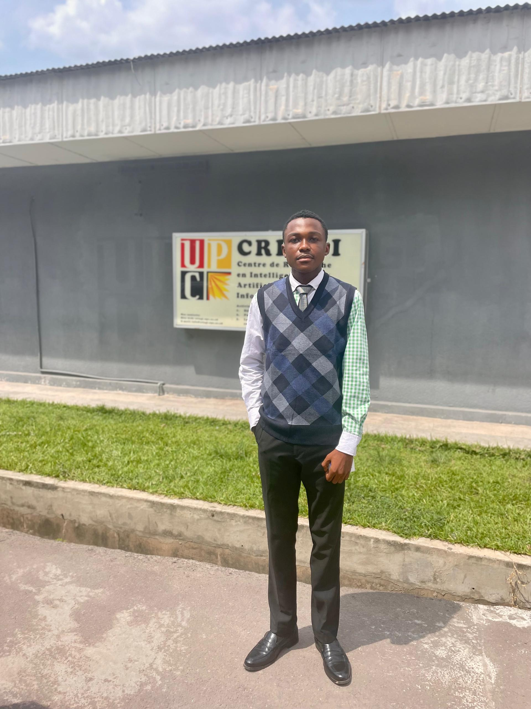

À propos de moi

Kambala Mpoyi Junior
Étudiant en sciences informatiques à l'Université Protestante au Congo (UPC), je suis passionné par les technologies et le monde du numérique.
Je développe progressivement mes connaissances en programmation, en développement web et en gestion des bases de données, tout en renforçant mes acquis à travers la pratique et la réalisation de projets informatiques.
Curieux et motivé par les défis technologiques, je souhaite approfondir mes connaissances en informatique, explorer les domaines de la cybersécurité et acquérir l'expérience nécessaire pour évoluer dans le secteur professionnel.